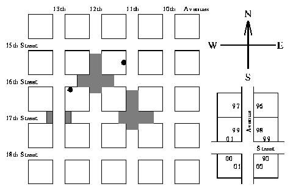

| City Navigation |
Most US cities are constructed according to a very simple plan--they have Avenues running north and south, and Streets running east and west, enclosing square blocks. Avenues and Streets are numbered, with numbers increasing westward and southward. There are 50 driveways on each side of a block, numbered 00 to 98 on one side and 01 to 99 on the other. House numbers increase in the same directions as Street and Avenue numbers. If you are travelling in the direction of increasing numbers then odd numbers are on your right. Thus the house at 1288 16th Street (S16 1288) is located on 16th Street, west of 12th Avenue and east of 13th Avenue, and is on the right-hand side going east. The residence described as A11 1543 lies on 11th Avenue, south of 15th Street and north of 16th Street, and is on the right-hand side going south. Both of these are marked on the following typical street map:

Quiet suburbs are formed by the simple expedient of making some Avenues and Streets discontinuous as shown above. Note that Avenues and Streets keep the same name, even when there are places where they simply don't exist. It is difficult to get lost in such a city, as the address tells you exactly where to go. However, if you don't know the pattern of missing portions, you can spend a lot of time going into dead-end roads.
Write a program that will firstly read in a description of the `missing' areas in a city and then a series of pairs of addresses, where an address is assumed to specify a driveway not necessarily a residence. For each pair of addresses the program must calculate the distance between them, by the shortest legal route. The distance is the number of driveways you pass (on your side of the road) excluding the source and destination. You may make the following assumptions:
Input will be divided into two portions: a ``missing road'' portion and an address portion, each terminated by a line consisting of a single `#'. The ``missing road'' portion consists of a series of lines with each line containing a road identifier and a pair of house numbers. A road identifier is an `A' or an `S' (specifying an Avenue or a Street) followed by a number in the range 00 to 49. A house number is an even number in the range 0000 to 4898. The area between and including the specified numbers on the identified road is inaccessible. Note that the line goes directly across the street, thus if number 1612 is inaccessible, then so is 1613. Inaccessible portions run from the borders of sections not from driveways. There will be exactly one space separating parts of the input.
The address portion consists of a series of lines each line containing two addresses. An address is a road identifier (as above) followed by a number in the range 0000 to 4899. There will be exactly one space separating parts of the input.
Output consists of a series of lines, one for each line in the address portion of the input file. Each line contains the distance between the two houses specified in the input (the number of driveways passed) written as an integer, left justified.
Note: The following sample data matches the diagram on previous page. (Note the intersection of A13 and S17).
A11 1612 1720 A12 1508 1636 S16 1152 1250 S17 1048 1134 S17 1272 1326 # S16 1288 A11 1543 #
213